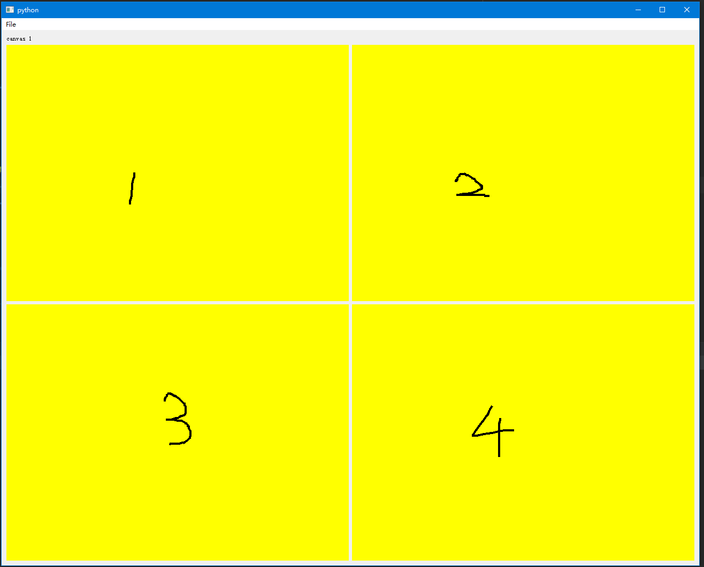
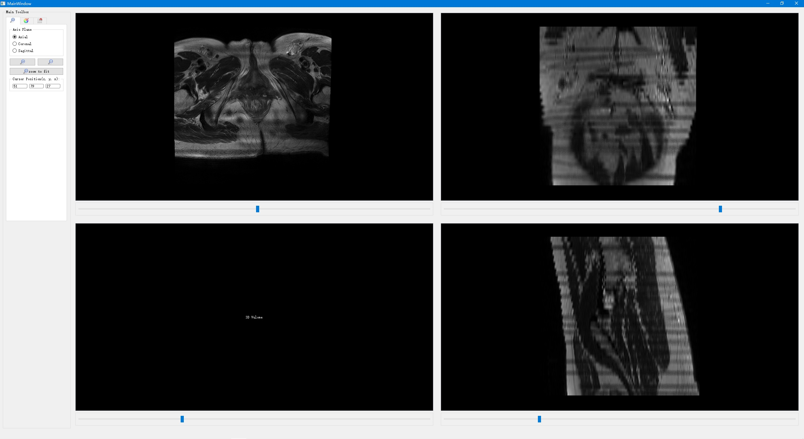
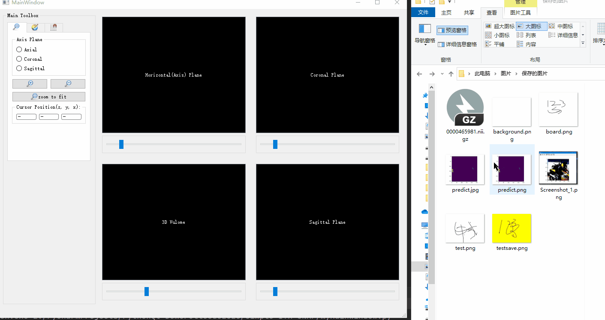
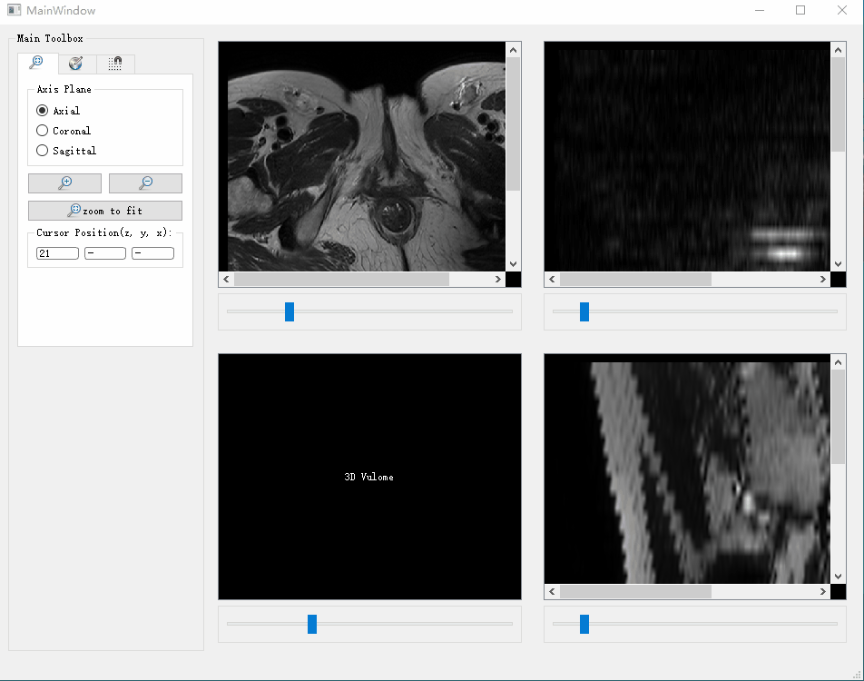
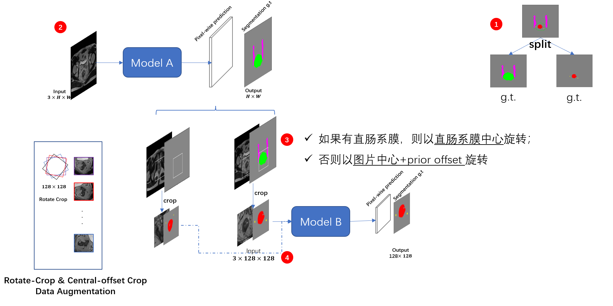
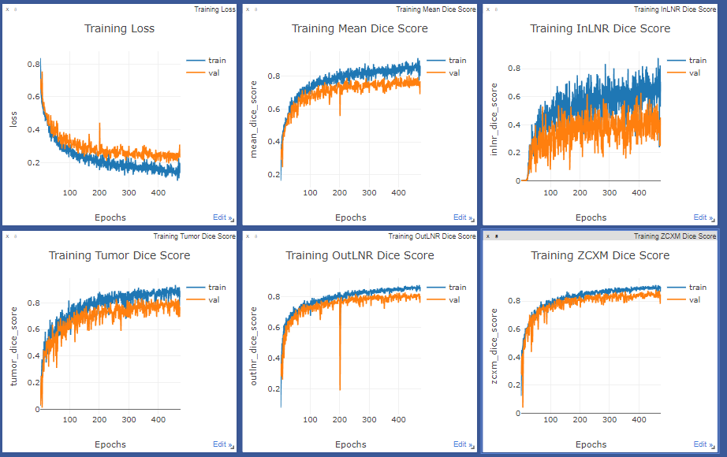
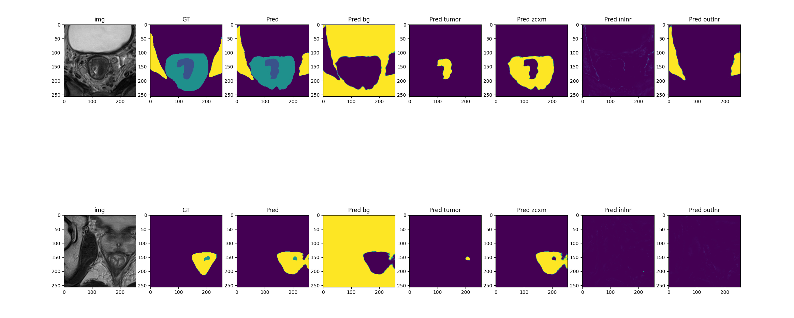

（1）Simple ITK-SNAP
- 多个绘画区域相互独立。

class Canvas(QtWidgets.QLabel):
def __init__(self):
super().__init__()
self.clear(Qt.yellow)
self.last_x, self.last_y = None, None
self.pen_color = QtGui.QColor('#000000')
def clear(self, color):
self.background = QtGui.QPixmap(self.width(), self.height())
self.background.fill(color) # 背景
self.paintboard = self.background
self.setPixmap(self.paintboard) # 在这张图像上画
def mouseMoveEvent(self, event):
if self.last_x is None: # First event.
self.last_x = event.x()
self.last_y = event.y()
return # Ignore the first time.
painter = QtGui.QPainter(self.pixmap())
p = painter.pen()
p.setWidth(4)
p.setColor(self.pen_color)
painter.setPen(p)
painter.drawLine(self.last_x, self.last_y, event.x(), event.y())
painter.end()
self.update()
# Update the origin for next time.
self.last_x = event.x()
self.last_y = event.y()
def mouseReleaseEvent(self, e):
self.last_x = None
self.last_y = None
# 被监测对象使用installEventFilter()函数将自己注册给监测对象
self.canvas1.installEventFilter(self)
self.canvas2.installEventFilter(self)
self.canvas3.installEventFilter(self)
self.canvas4.installEventFilter(self)
# 监测对象实现eventFilter()函数，对监测到的对象和事件作出处理
def eventFilter(self, watched, event):
if watched == self.canvas1:
self.status.setText("canvas 1")
elif watched == self.canvas2:
self.status.setText("canvas 2")
预览医学图像数据

-
拖拽加载医学图像
.nii.gz文件；
def dragEnterEvent(self, event: QtGui.QDragEnterEvent) -> None: if event.mimeData().hasUrls(): # ... event.acceptProposedAction() def dropEvent(self, event): filename = event.mimeData().urls()[0].path() # 完整文件名 # ... event.accept() -
图像放大/缩小功能；

- SliderBar 切换当前切片；

（2）多目标自动精确分割
多目标包含：肿瘤、直肠系膜、内淋巴结、外淋巴结。
| 分割目标 | Intersection over Union (%) | Sørensen-Dice Coefficient(%) |
|---|---|---|
| 肿瘤 | 79.17 | 88.37 |
| 直肠系膜 | 88.30 | 93.78 |
| 系膜内淋巴结 | 29.13 | 45.11 |
| 系膜外淋巴结 | 77.42 | 87.27 |
- Model 基于 HRNet。

- Training Curve

- [origin image]-[Ground Truth]-[Prediction]

2D U-Net Epoch: 500
（使用 Wisdom 进行可视化）
Train image/Ground Truth/Predict:


 Test image/Ground Truth/Predict:
Test image/Ground Truth/Predict: